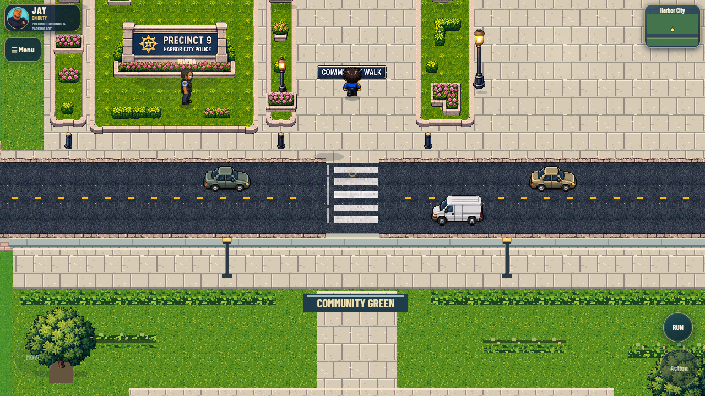
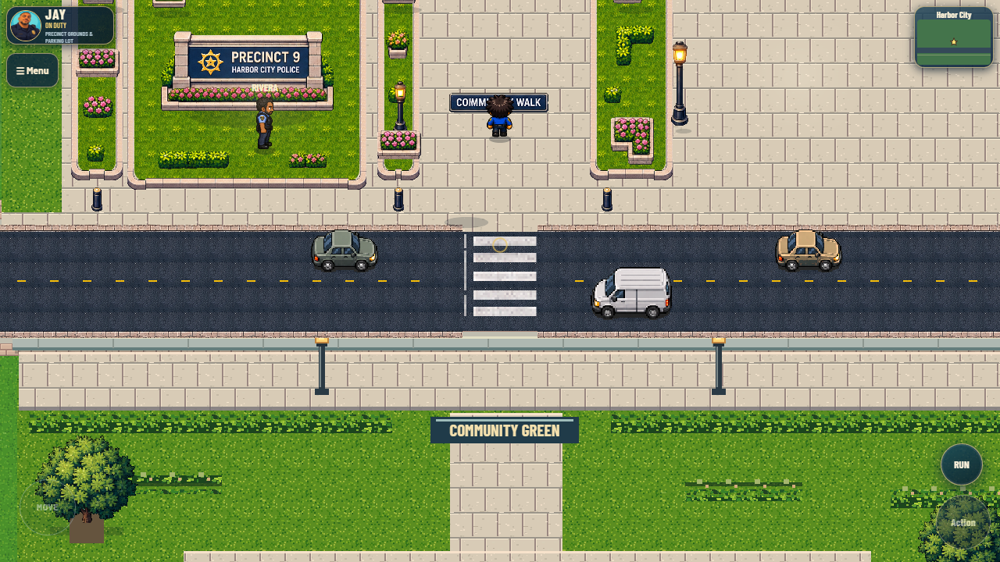
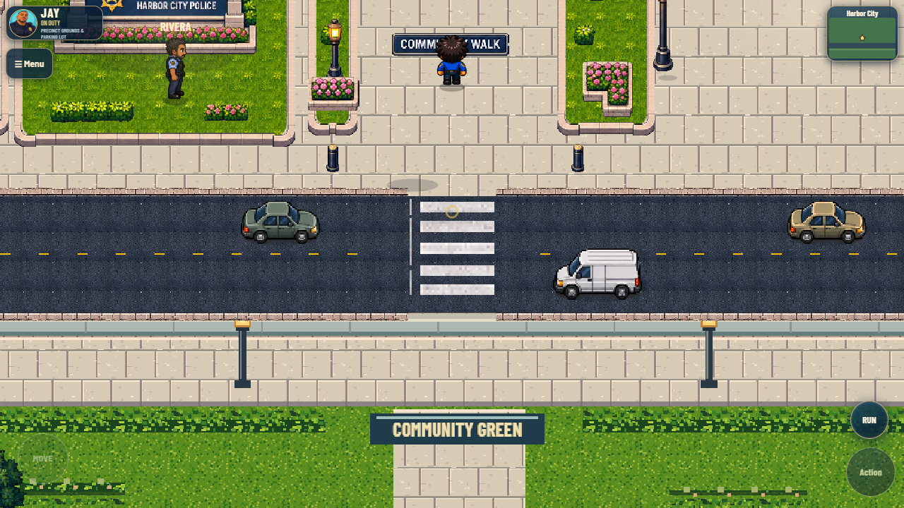
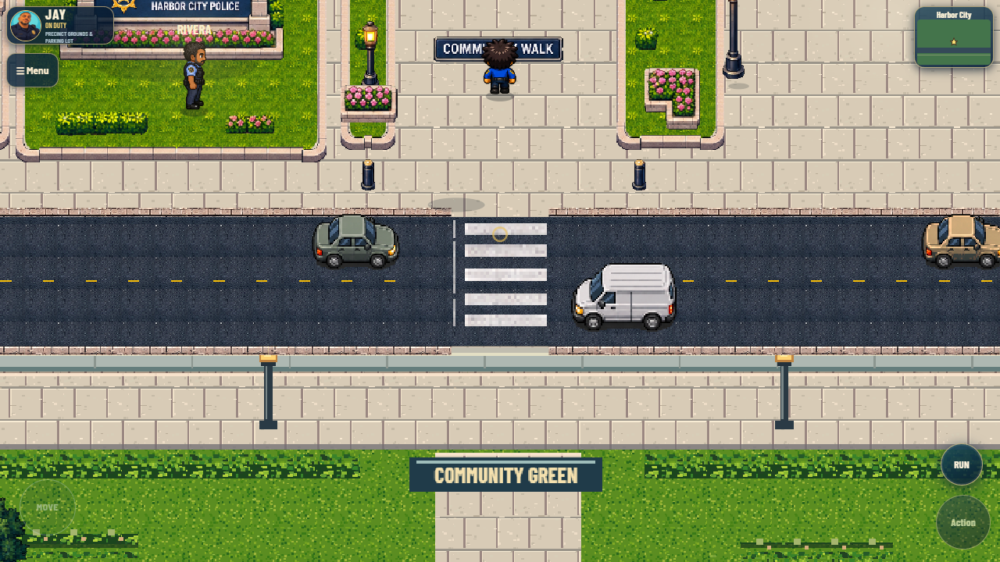
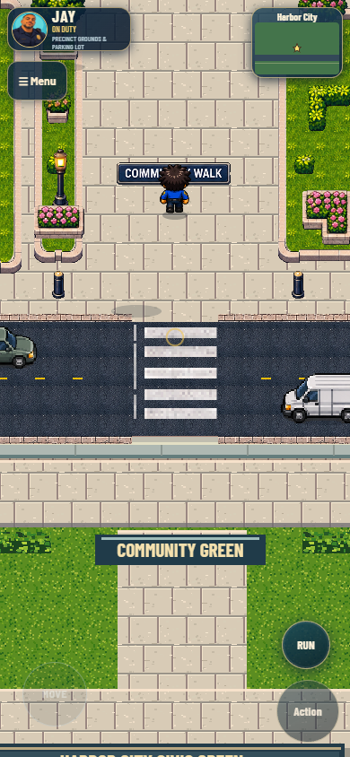
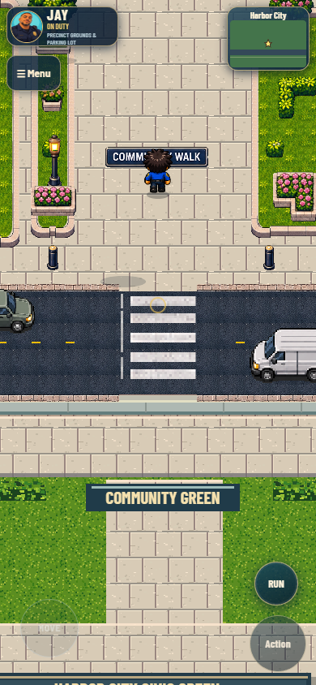
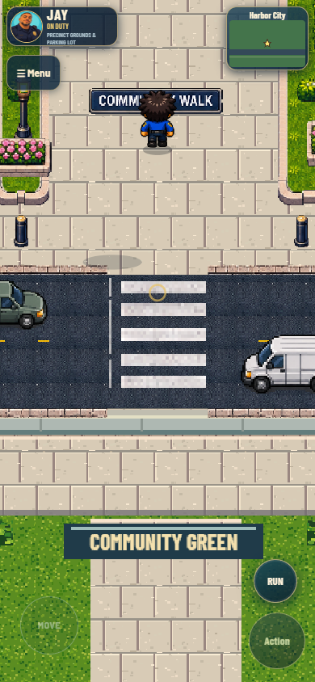
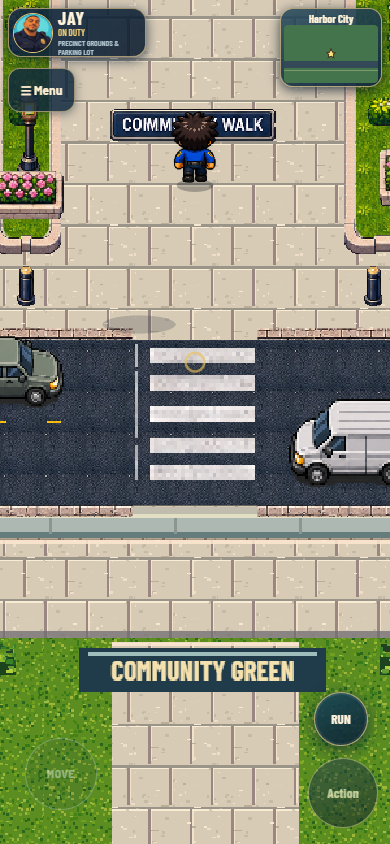
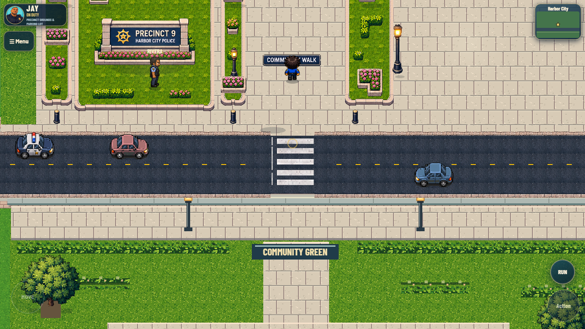

Actual game captures at matching camera positions and zoom. Street is 1.0×; detail is 1.3× in both builds. Live traffic continues, so vehicle positions differ. The generated sprite sheet is not used as gameplay evidence.
Playable street comparison · Tests and performance · Protected source hashes








